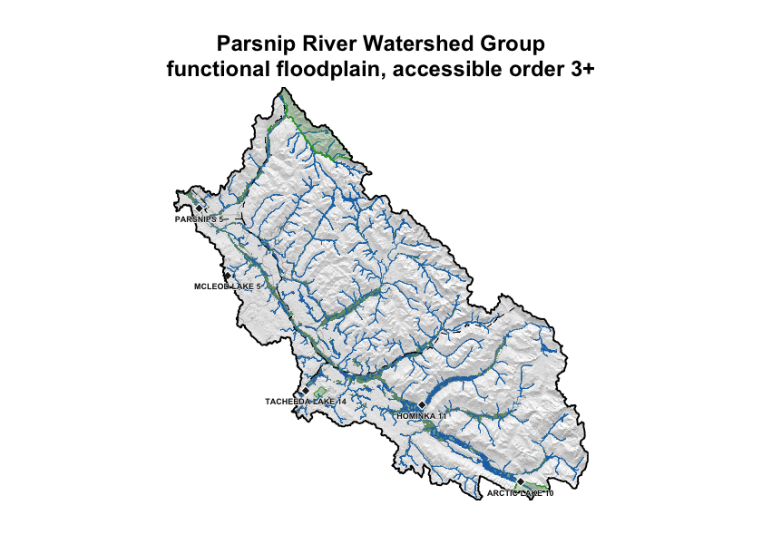
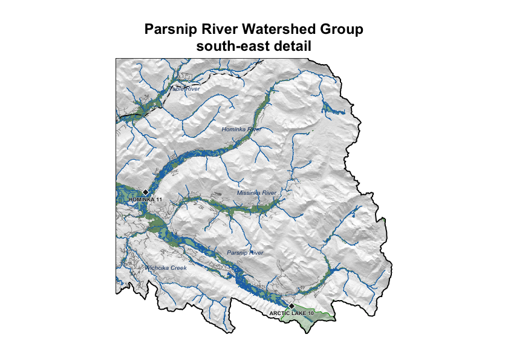

Appendix - Floodplain Delineation
gpkg <- "data/gis/pars.gpkg"
dem_tif <- "data/gis/pars_dem.tif"
val_tif <- "data/gis/pars_valleys.tif"
present <- sf::st_layers(gpkg)$name
load_layer <- function(name) {
if (name %in% present) sf::st_read(gpkg, layer = name, quiet = TRUE) else NULL
}
aoi <- load_layer("aoi")
streams <- load_layer("streams")
waterbodies <- load_layer("waterbodies")
floodplain <- load_layer("floodplain")
railways <- load_layer("railways")
roads <- load_layer("roads")
reserves <- load_layer("reserves")
parks <- load_layer("parks")
named_streams <- load_layer("named_streams")
dem <- terra::rast(dem_tif)
valleys <- terra::rast(val_tif)
dem <- terra::mask(terra::crop(dem, terra::vect(aoi)), terra::vect(aoi))
valleys <- terra::mask(terra::crop(valleys, terra::vect(aoi)), terra::vect(aoi))
streams <- suppressWarnings(sf::st_intersection(streams, aoi))
waterbodies <- suppressWarnings(sf::st_intersection(waterbodies, aoi))
floodplain <- suppressWarnings(sf::st_intersection(floodplain, aoi))
if (!is.null(roads)) roads <- suppressWarnings(sf::st_intersection(roads, aoi))
if (!is.null(railways)) railways <- suppressWarnings(sf::st_intersection(railways, aoi))
if (!is.null(reserves)) reserves <- suppressWarnings(sf::st_intersection(reserves, aoi))
if (!is.null(parks)) parks <- suppressWarnings(sf::st_intersection(parks, aoi))
if (!is.null(named_streams)) named_streams <- suppressWarnings(sf::st_intersection(named_streams, aoi))aoi_area_km2 <- as.numeric(sum(sf::st_area(aoi))) / 1e6
fp_area_ha <- as.numeric(sum(sf::st_area(floodplain))) / 1e4
fp_pct_aoi <- 100 * fp_area_ha / (aoi_area_km2 * 100)
streams_in_fp <- suppressWarnings(sf::st_intersection(streams, floodplain))
streams_km_total <- as.numeric(sum(sf::st_length(streams))) / 1e3
streams_km_in_fp <- as.numeric(sum(sf::st_length(streams_in_fp))) / 1e3
wb_in_fp <- suppressWarnings(sf::st_intersection(waterbodies, floodplain))
lakes_n <- sum(wb_in_fp$waterbody_type == "L", na.rm = TRUE)
wetlands_n <- sum(wb_in_fp$waterbody_type == "W", na.rm = TRUE)
lakes_ha <- as.numeric(sum(sf::st_area(wb_in_fp[wb_in_fp$waterbody_type == "L", ]))) / 1e4
wetlands_ha <- as.numeric(sum(sf::st_area(wb_in_fp[wb_in_fp$waterbody_type == "W", ]))) / 1e45.1 Floodplains and fish passage
Most fish-passage assessments treat a stream crossing as a single point on the mainstem — does it pass flow at bankfull, what is the gradient through the structure, can adult and juvenile fish move through it. That view captures only half the story. Streams in this region run through floodplains: the lower-lying ground that water reclaims at high flows, threaded with side channels, sloughs, beaver complexes, ponds, and wetlands. For salmonids, those off-channel areas are where freshwater survival is often won or lost. Winter low-flow refuge, freshet high-flow refuge, and the slow-water rearing that juveniles depend on are floodplain features, not mainstem features.
A barrier on the mainstem that severs lateral connection to its floodplain therefore cuts fish off from more than the river upstream — it cuts them off from the off-channel network that gives the reach its productivity. Mapping floodplain extent at watershed scale lets us overlay this information on the linear barrier inventory and ask a second question alongside passage: how much off-channel habitat sits within the affected footprint, and what does it contain.
We piloted floodplain delineation for the Parsnip River Watershed Group this reporting year. In coming years we plan to extend the method to the remaining FWCP Peace watersheds so that floodplain extent and values can carry through to barrier prioritisation across the region.
5.2 Methods
Floodplain footprints were delineated with the
flooded R package,
which combines a digital elevation model, the stream network, and a
modelled bankfull flood surface to identify the low-relief ground that
water can reach at high flow. The underlying algorithm is the Valley
Confinement Algorithm of Nagel et al. (2014), with bankfull
depth from the regional regression of Hall et al. (2007).
For this pilot we used the functional floodplain scenario
(ff04 in flooded::fl_scenarios()) — the recurrent-inundation
footprint produced by the bankfull-depth regression
Hall et al. (2007) calibrated against field-mapped
floodplain sites in Pacific Northwest streams. Higher and lower
flood-factor settings trace the active channel margin or the broader
valley bottom; the functional setting was chosen as the most relevant
scale for fish-habitat planning.
Inputs were the MRDEM-30 30 m digital elevation model, the bull trout accessible stream network (stream order ≥ 3) from bcfishpass, and BC Freshwater Atlas lakes and wetlands attached to that network.
5.3 Results
knitr::kable(
data.frame(
Metric = c(
"Watershed group area (km²)",
"Floodplain area (ha)",
"Floodplain as % of watershed group",
"Bull trout accessible streams, order 3+ (km)",
"Streams within floodplain (km)",
"Lakes within floodplain (count)",
"Lakes within floodplain (ha)",
"Wetlands within floodplain (count)",
"Wetlands within floodplain (ha)"
),
Value = c(
format(round(aoi_area_km2), big.mark = ","),
format(round(fp_area_ha), big.mark = ","),
sprintf("%.1f", fp_pct_aoi),
format(round(streams_km_total), big.mark = ","),
format(round(streams_km_in_fp), big.mark = ","),
format(lakes_n, big.mark = ","),
format(round(lakes_ha), big.mark = ","),
format(wetlands_n, big.mark = ","),
format(round(wetlands_ha), big.mark = ",")
),
stringsAsFactors = FALSE
),
caption = "Parsnip River Watershed Group — modelled functional floodplain and the off-channel habitat units within it.",
col.names = c("Metric", "Value"),
align = c("l", "r")
)| Metric | Value |
|---|---|
| Watershed group area (km²) | 5,597 |
| Floodplain area (ha) | 48,178 |
| Floodplain as % of watershed group | 8.6 |
| Bull trout accessible streams, order 3+ (km) | 2,310 |
| Streams within floodplain (km) | 1,579 |
| Lakes within floodplain (count) | 198 |
| Lakes within floodplain (ha) | 1,603 |
| Wetlands within floodplain (count) | 464 |
| Wetlands within floodplain (ha) | 6,583 |
The Parsnip River Watershed Group covers roughly 5,597 km². Modelled functional floodplain (Table 5.23) covers about 48,178 ha, or 8.6 % of the watershed group, attached to 1,579 km of the 2,310 km bull trout accessible order-3+ network. Within that footprint sit 198 lakes and 464 mapped wetland polygons — the off-channel habitat units that lateral floodplain connectivity supports.
The watershed-wide footprint is shown in Figure 5.11; a detail view of the south-east headwaters is shown in Figure 5.12.
hill <- terra::shade(
terra::terrain(dem, "slope", unit = "radians"),
terra::terrain(dem, "aspect", unit = "radians")
)
terra::plot(hill, col = grey(0:100 / 100), legend = FALSE, axes = FALSE,
mar = c(2, 2, 4, 2),
main = "Parsnip River Watershed Group\nfunctional floodplain, accessible order 3+")
terra::plot(valleys, col = c(NA, "#2c7a2c"), alpha = 0.55, add = TRUE, legend = FALSE)
plot(sf::st_geometry(waterbodies), col = "#a3cdb966", border = "#2171B5",
lwd = 0.3, add = TRUE)
plot(sf::st_geometry(streams), col = "#1f77b4", lwd = 0.4, add = TRUE)
if (!is.null(roads)) {
fsr <- roads[roads$transport_line_type_code %in% c("RRS", "RRD", "RRN"), ]
if (nrow(fsr) > 0L) {
plot(sf::st_geometry(fsr), col = "#88888888", lwd = 0.25, add = TRUE)
}
}
if (!is.null(railways)) {
plot(sf::st_geometry(railways), col = "black", lwd = 0.8, lty = "dashed", add = TRUE)
}
if (!is.null(parks)) {
plot(sf::st_geometry(parks), col = "#639b5f55", border = "#33a02c",
lwd = 0.7, add = TRUE)
}
if (!is.null(reserves)) {
plot(sf::st_geometry(reserves), col = "#b2b2b288", border = "#232323",
lwd = 0.6, add = TRUE)
pts <- suppressWarnings(sf::st_centroid(sf::st_geometry(reserves),
of_largest_polygon = TRUE))
plot(pts, pch = 23, bg = "#222222", col = "white", cex = 0.9, add = TRUE)
}
plot(sf::st_geometry(aoi), border = "black", lwd = 1.5, add = TRUE)
if (!is.null(reserves) && "english_name" %in% names(reserves) &&
nrow(reserves) > 0L) {
pts <- suppressWarnings(sf::st_centroid(sf::st_geometry(reserves),
of_largest_polygon = TRUE))
coords <- sf::st_coordinates(pts)
ofs_y <- par("cxy")[2] * 0.45 * 0.9
halo_x <- par("cxy")[1] * 0.45 * 0.05
halo_y <- par("cxy")[2] * 0.45 * 0.05
ly <- coords[, 2] - ofs_y
for (dx in c(-1, 1)) text(coords[, 1] + dx * halo_x, ly,
labels = reserves$english_name,
cex = 0.45, col = "white", font = 2, xpd = TRUE)
for (dy in c(-1, 1)) text(coords[, 1], ly + dy * halo_y,
labels = reserves$english_name,
cex = 0.45, col = "white", font = 2, xpd = TRUE)
text(coords[, 1], ly, labels = reserves$english_name,
cex = 0.45, col = "#111111", font = 2, xpd = TRUE)
}
Figure 5.11: Parsnip River Watershed Group functional floodplain (green) over hillshaded terrain. Bull trout accessible order-3+ streams in blue; lakes and wetlands in light blue; parks light green; First Nations reserves light grey with diamond markers and labels; forest service / resource roads grey; railways black dashed; watershed boundary heavy black.
e <- sf::st_bbox(aoi)
inset_bbox <- sf::st_bbox(c(
xmin = unname(e["xmin"] + (e["xmax"] - e["xmin"]) * 0.55),
ymin = unname(e["ymin"]),
xmax = unname(e["xmax"]),
ymax = unname(e["ymin"] + (e["ymax"] - e["ymin"]) * 0.45)
), crs = sf::st_crs(streams))
inset_ext <- terra::ext(inset_bbox[c("xmin", "xmax", "ymin", "ymax")])
crop_sf <- function(x) {
if (is.null(x) || nrow(x) == 0L) return(NULL)
out <- suppressWarnings(sf::st_crop(x, inset_bbox))
if (nrow(out) == 0L) NULL else out
}
dem_inset <- terra::crop(dem, inset_ext)
valleys_inset <- terra::crop(valleys, inset_ext)
streams_inset <- crop_sf(streams)
wb_inset <- crop_sf(waterbodies)
aoi_inset <- crop_sf(aoi)
roads_inset <- crop_sf(roads)
railways_inset <- crop_sf(railways)
reserves_inset <- crop_sf(reserves)
parks_inset <- crop_sf(parks)
named_streams_inset <- crop_sf(named_streams)
hill_inset <- terra::shade(
terra::terrain(dem_inset, "slope", unit = "radians"),
terra::terrain(dem_inset, "aspect", unit = "radians")
)
terra::plot(hill_inset, col = grey(0:100 / 100), legend = FALSE, axes = FALSE,
mar = c(2, 2, 4, 2),
main = "Parsnip River Watershed Group\nsouth-east detail")
terra::plot(valleys_inset, col = c(NA, "#2c7a2c"), alpha = 0.55,
add = TRUE, legend = FALSE)
if (!is.null(wb_inset)) {
plot(sf::st_geometry(wb_inset), col = "#a3cdb988", border = "#2171B5",
lwd = 0.4, add = TRUE)
}
plot(sf::st_geometry(streams_inset), col = "#1f77b4", lwd = 0.7, add = TRUE)
if (!is.null(roads_inset)) {
plot(sf::st_geometry(roads_inset), col = "#666666aa", lwd = 0.4, add = TRUE)
}
if (!is.null(railways_inset)) {
plot(sf::st_geometry(railways_inset), col = "black", lwd = 1.0, lty = "dashed",
add = TRUE)
}
if (!is.null(parks_inset)) {
plot(sf::st_geometry(parks_inset), col = "#639b5f55", border = "#33a02c",
lwd = 0.8, add = TRUE)
}
if (!is.null(reserves_inset)) {
plot(sf::st_geometry(reserves_inset), col = "#b2b2b2aa", border = "#232323",
lwd = 0.7, add = TRUE)
}
if (!is.null(aoi_inset)) {
plot(sf::st_geometry(aoi_inset), border = "black", lwd = 1.5, add = TRUE)
}
if (!is.null(named_streams_inset)) {
dedup <- named_streams_inset[!duplicated(named_streams_inset$gnis_name), ]
pts <- suppressWarnings(sf::st_centroid(sf::st_geometry(dedup)))
text(sf::st_coordinates(pts), labels = dedup$gnis_name,
cex = 0.5, font = 3, col = "#0d3a6c")
}
if (!is.null(reserves_inset) && "english_name" %in% names(reserves_inset) &&
nrow(reserves_inset) > 0L) {
pts <- suppressWarnings(sf::st_centroid(sf::st_geometry(reserves_inset),
of_largest_polygon = TRUE))
coords <- sf::st_coordinates(pts)
plot(pts, pch = 23, bg = "#222222", col = "white", cex = 1.0, add = TRUE)
ofs_y <- par("cxy")[2] * 0.45 * 0.9
halo_x <- par("cxy")[1] * 0.45 * 0.05
halo_y <- par("cxy")[2] * 0.45 * 0.05
ly <- coords[, 2] - ofs_y
for (dx in c(-1, 1)) text(coords[, 1] + dx * halo_x, ly,
labels = reserves_inset$english_name,
cex = 0.45, col = "white", font = 2, xpd = TRUE)
for (dy in c(-1, 1)) text(coords[, 1], ly + dy * halo_y,
labels = reserves_inset$english_name,
cex = 0.45, col = "white", font = 2, xpd = TRUE)
text(coords[, 1], ly, labels = reserves_inset$english_name,
cex = 0.45, col = "#111111", font = 2, xpd = TRUE)
}
Figure 5.12: South-east corner of the Parsnip River Watershed Group at full resolution — the headwaters around Arctic Lake on the continental divide. Symbology as Figure 5.11; named streams labelled in italic blue.
The watershed-wide view shows the floodplain following the trunk Parsnip River north toward Williston Reservoir, with substantial off-channel area in the broader valley reaches and at tributary confluences. The detail view resolves the per-reach floodplain pattern in the Arctic Lake headwaters on the continental divide and gives a sense of the resolution available within any sub-area for downstream analyses — barrier prioritisation, land-cover change tracking, or restoration scoping.